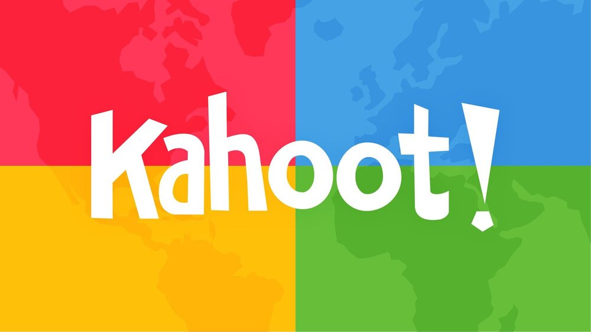
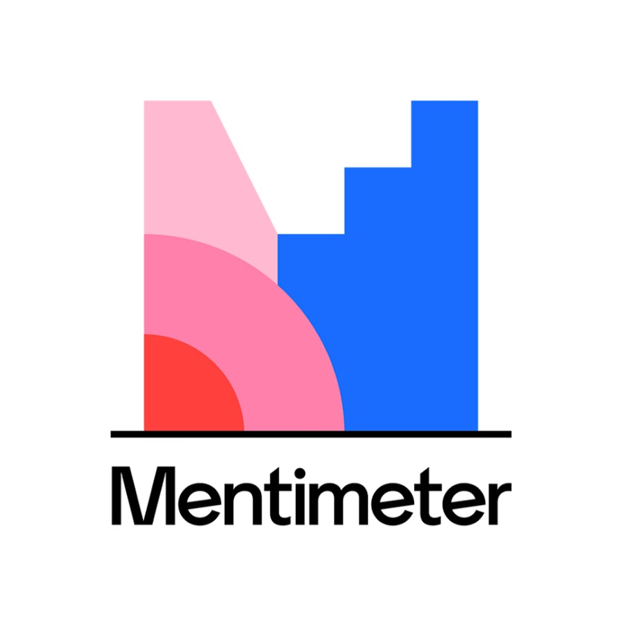

Bem-vindo(a) ao nosso site de estudos! Aqui você encontrará um ambiente virtual criado especialmente para
ajudar você a alcançar seus objetivos acadêmicos.
Nosso site é uma plataforma de aprendizado interativa que oferece uma ampla variedade de aulas e
recursos educacionais para estudantes de todas as idades e níveis de habilidade. Se você está procurando
aprimorar suas habilidades em um assunto específico, se preparar para um exame importante ou
simplesmente expandir seu conhecimento em geral, nosso site tem tudo o que você precisa.
Este site foi programado por alunos do CSC e foi projetado para ser flexível e
adaptável, conforme as necessidades de cada aluno. Você pode estudar no seu próprio ritmo, de acordo com
sua
agenda e em qualquer lugar que seja conveniente para você.
Nosso site também oferece uma ampla variedade de recursos gratuitos, como livros
digitais, jogos e vídeos educacionais, para ajudar você a aprender de forma simples e complementar
seus estudos.
Esperamos que você aproveite ao máximo tudo o que nosso site tem a oferecer e desejamos a vocês uma
jornada
de aprendizado bem-sucedida e gratificante!
Kahoot : Este site permite que os professores criem jogos educacionais personalizados para seus alunos. Os jogos podem ser jogados em sala de aula ou online, e são projetados para ajudar os alunos a estudar e revisar informações de uma forma divertida e interativa. Os jogos podem ser adaptados para uma ampla variedade de assuntos e níveis de habilidade.

Mentimeter : É uma plataforma online de apresentações interativas que permite que os usuários criem e apresentem apresentações e enquetes em tempo real. A plataforma é usada para envolver a audiência em apresentações e obter feedback em tempo real. Os usuários podem criar enquetes e pesquisas, perguntas abertas ou fechadas e outros tipos de interações em tempo real. As apresentações podem ser personalizadas com gráficos e imagens para torná-las mais atraentes para a audiência.
